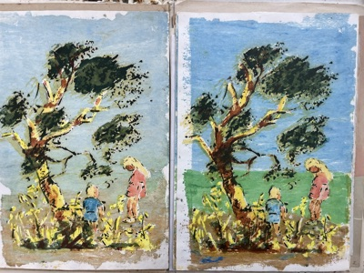

Opere d'arte
Pittura
olio · tempera · acquerello


Paesaggio con Margheritine
Opere d'arte › Pittura · acquerello

Anemone Coronaria
Opere d'arte › Pittura · acquerello

Paesaggio con Silene Conica
Opere d'arte › Pittura · acquerello
Disegno
matita · carboncino
Altre tecniche
incisione · tecnica mista

Children playing
Opere d'arte › Altre tecniche · tecnica mista